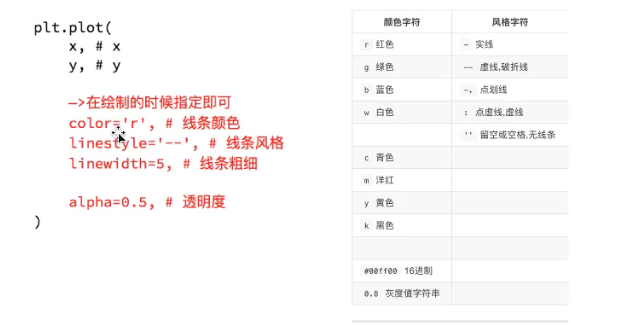

Matplotlib
figure图像
创建一个画板，可以调用
plt.figure(num=None, figsize=None, dpi=None, facecolor=None, edgecolor=None, frameon=True)
num:图像编号或名称，数字为编号 ，字符串为名称
figsize:指定figure的宽和高，单位为英寸；
dpi参数指定绘图对象的分辨率，即每英寸多少个像素，缺省值为80 1英寸等于2.5cm,A4纸是 21*30cm的纸张
facecolor:背景颜色
edgecolor:边框颜色
frameon:是否显示边框
plt.subplot()
plt.figure(1) # 创建第一个画板（figure）
plt.subplot(211) # 第一个画板的第一个子图
plt.plot([1, 2, 3])
plt.subplot(212) # 第二个画板的第二个子图
plt.plot([4, 5, 6])
plt.figure(2) # 创建第二个画板
plt.plot([4, 5, 6]) # 默认子图命令是subplot(111)
plt.figure(1) # 调取画板1; subplot(212)仍然被调用中
plt.subplot(211) # 调用subplot(211)
plt.title('Easy as 1, 2, 3') # 做出211的标题
设置图像大小
fig = plt.figure(figsize=(20,8), dpi=80)
x=
y=
plt.plot(x,y)
plt.savefig("./t1.png")
plt.show()
调整x轴或y轴刻度
x=range(2,26,2)
plt.xticks(x)
plt.xticks(x[ : :2])
x1=list(x)[::10]
xtick_labels=["hello,{}".format(i) for i in x1]
plt.xticks(x1,xtick_labels,rotation=90)
plt.show()
设置中文字体
my_font = font_manager.FontProperties(fname="Sysytem/Library/Fonts/PingFang.ttc")
plt.xticks(x1,xtick_labels,rotation=90,fontproperties=my_font)
设置图形信息
plt.xlabel("时间"，fontproperties=my_font)
plt.ylabel("温度",fontproperties=my_font)
plt.title("10点到12点每分钟的气温变化",fontproperties=my_font)
画网格
plt.grid(alpha=0.4) //alpha透明度（0-1）
画多条线
plt.plot(x1,y1, label="一")
plt.plot(x2,y2, label="二")
plt.legend(prop=my_font，loc="upper left") //loc调整位置
自定义绘制风格

散点图
plt.scatter(x,y)
条形图
plt.bar(x,y,width)
a=['q','w','e','r']
b1 = [1,2,3,4]
b2 = [2,5,6,9]
b3 = [8,6,3,1]
x1 = list(range(len(a)))
x2 = [i+0.2 for i in x1]
x3 = [i+0.2*2 for i in x1]
plt.figure()
plt.bar(range(len(a)), b1, width=0.2)
plt.bar(x2, b2, width=0.2)
plt.bar(x3, b3, width=0.2)
plt.xticks(x2, a)

直方图
组数：将数据分组，当数据在100个以内时，分为5-12组
组距：指每个小组的两个端点的距离
组数：极差/组距 = ( max(a)-min(a) )/bin_width
plt.hist(a,num_bins,normed=True) //normed：频率分布直方图
一般来说能够使用plt.hist方法的是那些没有统计过的数据
统计之后的数据，为了能达到直方图的效果，可以用条形图